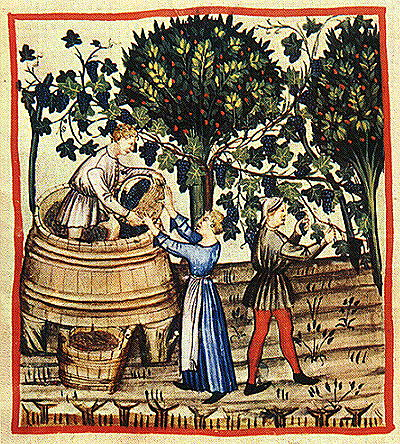
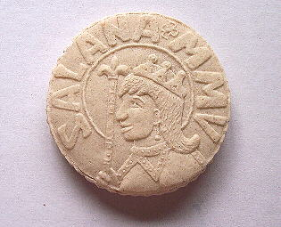
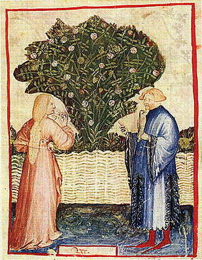
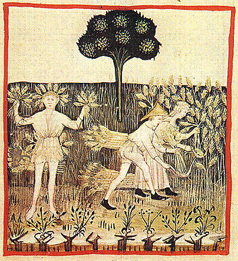

|
October 15th, 2005 Gode Cookery in Alabama, 2005: This year's very special menu has been composed by Lisa
Holcomb-Blair & is an Italian Renaissance Feast in honor of the
four seasons. The main primary sources for the menu are: De honeste voluptate
by Bartolomeo Sacchi, called Platina, late 15th c., Italian Festività
Delle Quattro Stagioni In Italy, the
Renaissance was the period of rebirth, sparking the revival of
classical arts and societal customs. Along with the renewed aesthetic
focus came the innate interest in science and medicine. With this, the
rebirth of the classical kitchen was in full swing. Now it was the
cook's job not just to prepare food for sustenance and pleasure, but
for its health generating properties as well. The long forgotten tomes
of Galen and Hippocrates were once again consulted, and their theories
prescribed for health and vitality in daily life. This ancient
system, known as the humoral theory, assigned common elements, such as
earth, air, fire, and water, and qualities like dry, moist, hot, and
cold, to all living things. In short, the humoral qualities of foods
were once again brought to the foreground and consumed for optimal
health and balance within the seasonal cycle. With the newfound
focus on health, many noble families consulted artists and doctors
alike to produce manuscripts of instruction on optimal health.
One of the most beautiful and thorough of these text is the Tacuinum Sanitatis in Medicina, The Four
Seasons In the House of Cerruti. This 14th century Northern
Italian manuscript contains extensive information and detailed
illuminations
illustrating the gathering and preparation of foodstuffs and medicinal
herbs and preparations according to seasonal availability. The original
copy now resides Oesterreichische Nationalbibliothek in Vienna. Along
with the recipes of Platina's Dehoneste
Voluptate, Gode Cookery is honored to present the
Festività Delle Quattro Stagioni... The Feast of the Four
Seasons. AUTUMNO  We will begin our journey into the
culinary history of the House of Cerruti with Autumn. When the sun
enters Libra, thus begins Autumn and the grape harvest. Fruits and nuts
have also reached their peak at this time. Stores and preserves were
prepared for the winter and feast tables were elegantly dressed in
seasonal finery and baked goods reflecting this time of abundance. PANE
E BURRO (Bread & butter)
DE CONDITURA CAEPARUM (Onions in strong sweet broth) Beef broth and sautéed onions thickened with a few bread crumbs. Ingredients: Onions, strong broth, pepper, and white grape juice. Source: Platina RISUM IN QuO IVS IVRE (Rice in the juice you please) Prepare rice in the same manner as the
meal. Some leave out the eggs. It is done according to your choice. PVLEVS IN ACRESTA (Chicken in verjuice) Ingredients: Chicken,
verjuice, parsley mint, saffron, salt, pepper. Source: Platina INVERNO
Winter, from the Tacuinum of Vienna In winter, if
the air is too cold, one avoids the wind, especially the north wind.
Regarding food, the concept of de
mensa sume quantumvis tempore brume, eat as much as you want in
the wintertime, holds true. It is suggested that due to the cold moist
nature of the season, that food be increased and fluid consumption
decreased, lest it be a hearty and robust wine. Therefore winter ushers
in a shift in culinary preference toward hearty foods that are warming
in nature.
IN CANABIM (Cabbage a la Romane) Ingredients: Cabbage, pork
fat, strong broth, pepper, saffron. Source: Platina ESICvMSICvLvM (Macaroni)
A dish of macaroni, butter, cheese, & herbs. Ingredients: Macaroni, rosewater, broth, hard cheese, butter, mild herbs. Source: Platina White flour, moistened with the white of an egg and rosewater, should be well ground. Roll this into slender bits like straw, stretched into the length of half a foot. With a very thin iron stylus, scrape out the middle. Then as you remove the iron, you leave them hollow. Then, spread out just so and dried in the sun, they will last for two or three years. Indeed especially if they are made in the month of the August moon. They should be cooked in rich juice and poured into dishes and sprinkled with grated cheese, fresh butter and mild herbs. IN PVLPAM ROMANAM (Meat in the Roman style) IVS CONDITVM VINVM (Sauce of spiced wine) Roast seasoned pork served with an aromatic wine sauce. Ingredients: Pork loin, fennel, salt, red wine, cloves, cinnamon, mace, black pepper, bread crumbs, strong broth. Source: Platina & Cerruti Platina: Cut meat into morsels not larger than the size of an egg, in such a way that none is completely severed from the other, right away, sprinkle them with salt and coriander or ground fennel, having sprinkled them, press them a little between two boards. Then pass a spit through them with pieces of lard inserted so that the pieces of meat do not touch each other. Turn them over the fire, seeing that they do not become to dry, until they are cooked. This is of great and heavy nourishment. It is also slow to be digested. This recipe has been modified form the original by substituting modern preparation and cooking techniques. The loin roasts were filleted into flat steaks and the herbs and seasoning were dry rubbed onto the tops of each. They were then rolled, tied, browned, and roasted in a slow oven until tender. The Cerruti manuscript suggests that older aromatic wines are better tolerated during the winter months. To incorporate this into our menu, Ius Conditum Vinum is being served with the Pulpam Romanam. La
Presentazione della Cialda Reale
The Presentation of the Royal Wafer This year's
feast wafer is in honor of Her Royal Majesty Salana, and shows a
profile of Her Majesty bordered by the name SALANA and the date MMV.
This original design and hand carved mold are by Darell McCormick.

Ingredients: eggs, sugar, bakers ammonia, flour, cinnamon, ginger, nutmeg, mace, cardamom, & butter flavor. PRIMAVERA  Spring, from the Tacuinum of Paris Spring commences with the
vernal equinox when the sun enters the sign of Aries and ends when the
sun has passed through Aries and the adjacent signs of Taurus and
Gemini and reaches the solstice. This is the time, as we know, when the
days are longer, the weather is changeable, and vegetation and
inclinations begin to bloom. In a culinary sense, we see a shift toward
lighter dishes and fresh sprouting greens and floral preparations as
the days lengthen and warm. CONDITVM PADODOPUM (A salad of several greens) Ingredients: Romaine, mixed
greens, baby spinach, herbs, oil and vinegar. Source: Platina FABA IN FRIXORIO (Broad
beans in the frying
pan) Source: Platina For this recipe, we are
substituting dates for figs. Ingredients: Eggs, milk,
butter, parsley, marjoram, sugar, ginger, rosewater in pastry. Source: Platina Ingredients: eggs, sugar,
bakers ammonia, honey, flour, rose petal jam, cream. For the cakes, we are using
this recipe: L’ESTATE
 Summer, from the Tacuinum of Vienna We end our feast with summer's
bounty of fresh fruits and crisp vegetables. In the summer it is
beneficial to stay occasionally in a country house. The countryside
provides food for the city and similarly, human life is prolonged by
frequenting the countryside. Early summer is the most beneficial time
for the body when the sun is in Cancer. It dissolves the excesses from
the food we eat and abates the cold illness. Excessive exercise should
be avoided during this time and the learned Galen suggests that pure
spring water be consumed and cold beverages avoided. CIBRIVM Ex PISO (Pottage from peas) Ingredients: Green peas, salt
pork, vinegar, sugar, cinnamon. Source: Platina CVCVRBITA IN RAFANI (Cucumbers and gourds with seasoned
radishes) Ingredients: Cucumbers,
zucchini, parsley, and radishes in salt, pepper, vinegar, oil Source: Platina TORTA ALBA (White cheese
tarts with plums) Source: Platina Our recipe is a variation of
this original from Platina, leaving out the cut-up red roses and the
rosewater, substituting plums for cherries, and making a few minor
additions to the ingredients. La Cerimonia del Re del Fagiolo This year's Bean
King Cake also features a special design carved by Darell McCormick,
and appropriately shows a medieval crown. Inside one of the Bean King
Cakes has been baked a small, authentic Roman coin (in honor of our
Italian feast), and the lucky one who chooses this cake during the
ceremony will become the next king or queen and will reign over the
feast in 2006. Good luck to all of the ceremony participants, and
congratulations to the new monarch!
Ingredients: eggs, sugar, baker's ammonia, flour, raspberry flavor.
Bevande
(Beverages) Tè
Dolce (Sweet Tea) Acqua Del Limone (Lemon Water) © 2005 Gode
Cookery
http://www.godecookery.com
|

BACK TO: Alabama Renaissance Faire
A Boke of Gode Cookery Alabama
Renaissance Faire
Alabama
Renaissance Faire
© James L. Matterer
Please visit: The Gode Cookery Bookshop